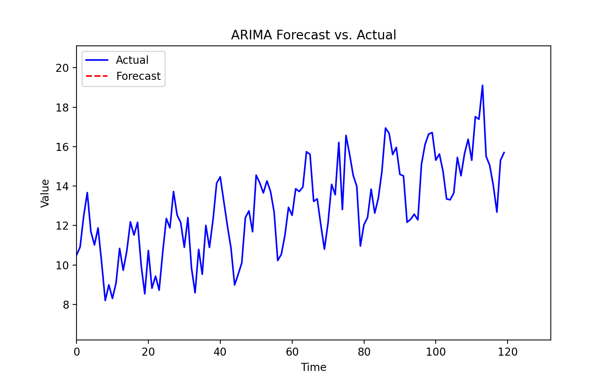

Overview
This page demonstrates time series analysis techniques including decomposition and ARIMA forecasting, which are widely used in financial modeling.
Time Series Decomposition
Decomposition splits a time series into trend, seasonality, and residual components:
\[
Y_t = T_t + S_t + R_t
\]
- \( Y_t \): observed value
- \( T_t \): trend
- \( S_t \): seasonality
- \( R_t \): residual
Python Implementation
import numpy as np
import pandas as pd
import matplotlib.pyplot as plt
from statsmodels.tsa.seasonal import seasonal_decompose
np.random.seed(42)
t = np.arange(120)
trend = 0.05 * t
seasonal = 2 * np.sin(2 * np.pi * t / 12)
noise = np.random.normal(0, 1, 120)
y = 10 + trend + seasonal + noise
series = pd.Series(y)
result = seasonal_decompose(series, model='additive', period=12)
result.plot()
plt.show()
ARIMA Forecasting
ARIMA models are used for forecasting time series with autocorrelation. The general ARIMA(\(p,d,q\)) model is:
\[
\phi(B)(1-B)^d Y_t = \theta(B)\varepsilon_t
\]
- \( \phi(B) \): autoregressive polynomial
- \( \theta(B) \): moving average polynomial
- \( d \): differencing order
Python Implementation
from statsmodels.tsa.arima.model import ARIMA
model = ARIMA(series, order=(2,1,2))
fit = model.fit()
forecast = fit.forecast(steps=12)
plt.plot(series, label='Actual')
plt.plot(np.arange(len(series), len(series)+12), forecast, label='Forecast')
plt.legend()
plt.show()
Visualization
The GIF below animates the ARIMA forecast vs. actual time series.

The ARIMA model captures the trend and seasonality for short-term forecasting.